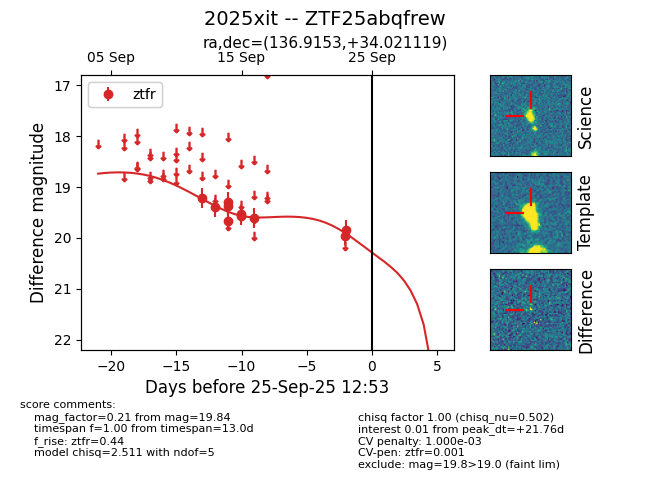
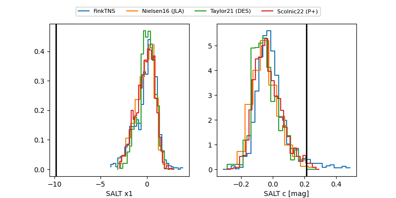

FINK: ZTF25abqfrew
Lasair: ZTF25abqfrew
ALeRCE: ZTF25abqfrew
TNS: 2025xit
YSE: 2025xit
ZTF25abqfrew (ztf,fink)
2025xit (tns,yse)
equatorial (ra, dec) = (136.9153,+34.02112)
galactic (l, b) = (190.2988,+41.92879)


last ztfr=19.84
10 ztfr detections